Control Circuit 2026 › Tutorial › Chapter 6
Control Circuit is a data driven, data centric and data producing tool. After the electrical schematic itself, the most valuable thing any ECAD system gives you is data: a Bill of Materials, Component Lists, Purchasing Lists, and any number of schedules and reports. Getting data into and out of your ECAD system is critical.
XML Control Circuit, as the name suggests, saves and stores all circuit information in plain, human readable, Git diff friendly XML. That means easy edits, and easy automation for any form of data or report that is not built in. For this app the default storage of component database records is XML too. (Some XML Control apps additionally offer SQLite as an option.)
Control Circuit does not ship with your component databases: every user has house standards, preferred manufacturers, and data that already exists and can be imported. It does ship with one small generic database, STARTER, to get you going.
Moving data in and out is made simple with the built in CSV tools. Export a sample database to get the gist of the format, lay your own data out to match, then import it. Be aware of the practical limits of an XML database, which the program’s help describes: about 2,000 components is comfortable, and 10,000 is the ceiling. You can create as many databases as you like.
Once you have a database, components are assigned to the symbols on your circuit, and one symbol may carry as many components as you like, each with a quantity of up to 9,999. Component data can be left out of all reports and output lists with a single checkbox on that symbol, while the data itself stays put in case you want it back. That way one design can be set up for “options” that change purchasing and assembly.
Symbols are identified by Tags, and a Tag belongs to a symbol with a Contact Role of MAIN. A MAIN symbol can be the parent of child contacts such as NO, NC and AUX, and these can carry component data of their own too, so even the options on a contactor’s contact blocks can be switched in and out. That is the subject of the next chapter. This chapter is about the databases themselves.
Choose Tools › Component Databases…
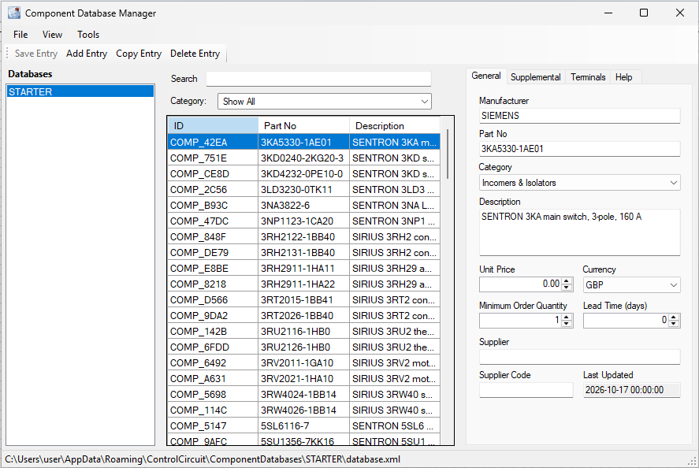
When you install Control Circuit a small database called STARTER is added for you. It holds around 120 components from well known global brands, with one maker chosen for each product line. There is no affiliation or sponsorship with any of them: they are simply the usual suspects in the world of electrical control and automation, there to give you a launch pad for your own databases. You can add and delete entries in STARTER as you please.
The first tool to try is the Category drop down, which filters the list. The number beside each category is how many components it holds.
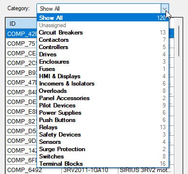
Here we have chosen Circuit Breakers:
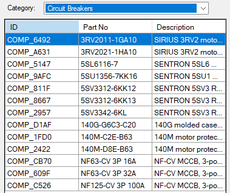
Next comes the Search bar. It works on whichever category you are in, so you can narrow things down further.
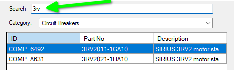
On the right of the window, the General tab shows the fields that every component in every database carries. They are the logical minimum, and their use should be self evident.
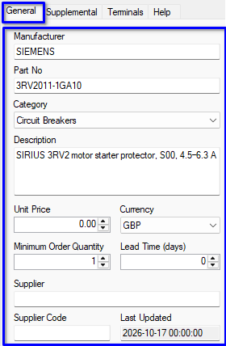
For anything beyond those, such as Height, Width, Weight or Approvals, the Supplemental tab holds your own values. Supplemental fields belong to the database they are defined in, so each database can have a different set.
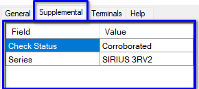
STARTER carries two of its own. Check Status records how well each component has been confirmed, from Verified (checked against the manufacturer’s own page) down to Single source (one listing only). Series names the product family.
You may have as many supplemental fields as you like. To add them we edit the database’s schema, which is a fancy word for the master plan that defines how the database is organised. Choose Tools › Edit Schema…
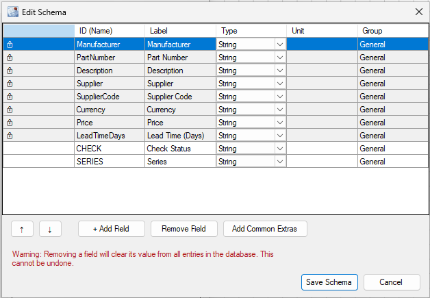
There is a lot going on here, so we’ll take it a step at a time.
The built in fields carry a small padlock. They belong to every database, and they cannot be removed or changed.
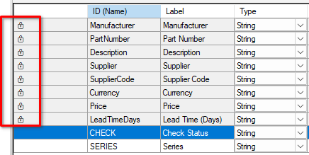
Below the padlocked fields come the ones you add. In our example those are CHECK and SERIES. The Type column sets what kind of value a field will accept: String for text, Decimal, Integer, a URL, or an image reference.
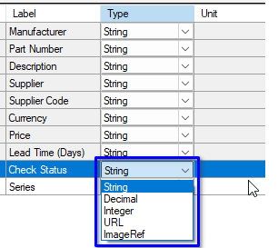
Tap Add Common Extras and the list is extended with fields that electrical designers commonly want: sizes, weight, mounting, voltage, current, power, IP rating, lifecycle, a datasheet link and so on. They show how the Unit column can be used too.
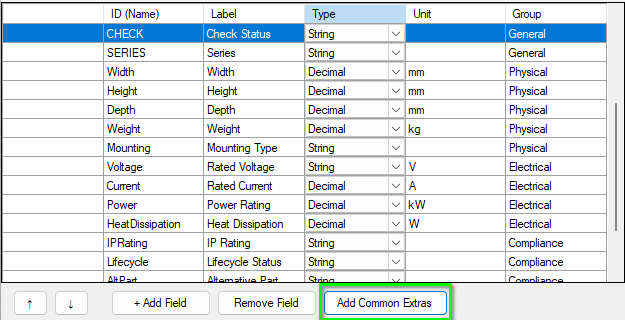
Use + Add Field to add a new row, and the up and down arrows to move the selected row through the list. Select a row and tap Remove Field to delete it.
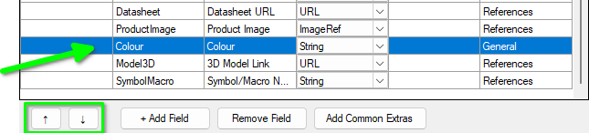
When you are done, press Save Schema to commit your edits, or Cancel to throw them away. Open the Supplemental tab again and the new fields are there, waiting for values.
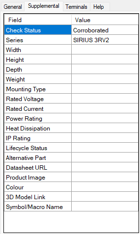
To add more categories, or tidy the ones you have, choose Tools › Edit Categories… You can add and remove categories and move them up and down the list, and the Category drop down and the General tab pick up your changes.
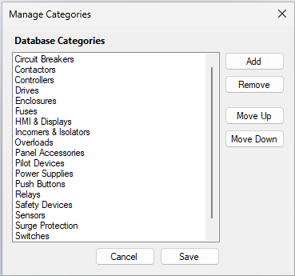
The component list always shows ID, Part No and Description. Want to see more of the General tab’s fields in the list itself? Right click on the list and choose Choose Columns…
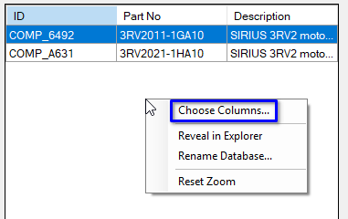
Tick each field you want to display, then press OK.
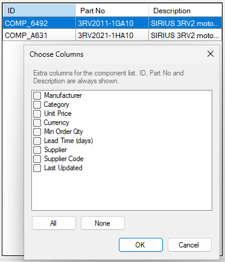
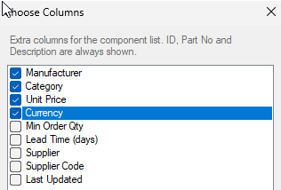
Now the list shows your chosen columns, and the column headers can be used to sort it.
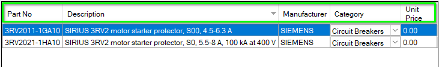
Now that you know how a database is set up, let’s look at its entries.
Select the database in the list on the left, then tap Add Entry on the toolbar. A small dialog asks for the details.
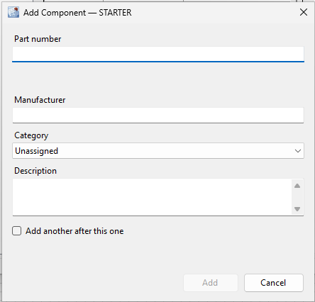
Only a part number is required. Complete as much of the rest as you like, then press Add. Nothing is created until you do, so Cancel leaves the database exactly as it was. The new component is selected and scrolled into view, ready for you to fill in the rest on the tabs.
The part number is checked as you type, and a part that is already in the database cannot be added a second time. Formatting does not fool it: 3rt2015 1bb41 and 3RT2015-1BB41 are the same part. The dialog tells you which component has it, and Show it closes the dialog and takes you to that component.
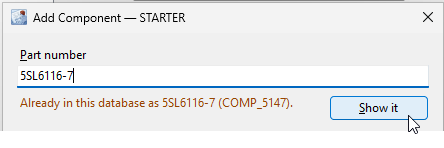
To add more than one, tick Add another after this one. After each Add the dialog comes straight back, with the manufacturer and category kept and a line listing what you have added so far, which is a quick way to enter a run of parts from one maker. The Cancel button reads Done once you have added one; press it to stop. Each component is saved as you add it, and the last one added is scrolled into view and highlighted.
To copy a component, select its row and tap Copy Entry. Everything comes across, including the supplemental fields, and the copy’s part number ends in -COPY and is selected ready for you to type over. Nothing forces you to rename it, but a part number nobody can order is meant to be noticed, so give it one of its own before you move on. Copying is the quick way to enter a family of parts that differ by a rating or two.
To remove a component, select its row and tap Delete Entry. You are asked to confirm, and there is no undo.
On the File menu, Autosave Active is ticked by default, which means an edited component is saved as soon as you move off it. If you turn it off, a Save Entry button appears at the foot of the General tab, and if you forget it, you are asked whether to save or discard when you try to leave the component.
Components are assigned to symbols, and symbols are identified by Tags. In the next chapter we look at Tags, Contact Roles and assigning component data to the symbols on a circuit. Until then, the program’s help (F1) goes deeper into everything here; try searching for Database Schema or Creating and Removing Components.